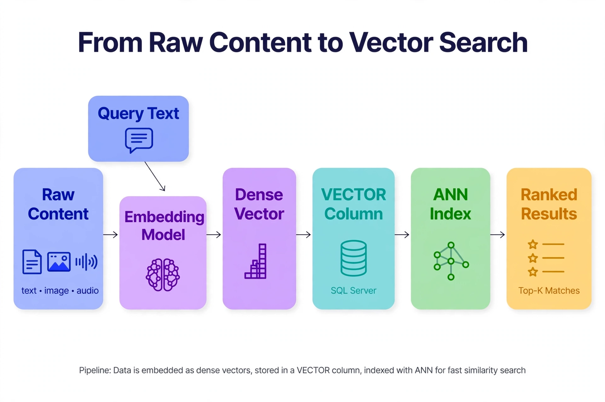

Chapter 1: What Are Embeddings and Why Databases Need Them
If you have spent years designing schemas, tuning indexes, and optimizing query plans, the idea of storing lists of floating-point numbers as a first-class database primitive probably sounds strange. This chapter explains why that instinct is worth revisiting. Embeddings are the data structure at the center of modern AI applications — from semantic search and recommendation engines to retrieval-augmented generation (RAG) pipelines — and understanding them at the infrastructure level is what separates engineers who bolt AI onto existing systems from those who build systems that actually perform at scale.
---
From Keywords to Coordinates: How Machines Represent Meaning
Traditional databases store meaning in structure. A product with category = 'running shoes' and brand = 'Nike' communicates meaning through schema design, foreign keys, and the queries you write against them. The database itself has no concept of what "running shoes" means — it only knows that two rows share the same string value in a column.
Natural language does not work this way. When a user searches for "comfortable sneakers for long runs," no keyword match will reliably surface products described as "cushioned athletic footwear for distance training." The words are different. The meaning is the same.
Embeddings solve this by converting text, images, audio, or any structured content into points in a high-dimensional vector space, where proximity encodes semantic similarity. Instead of asking "do these two strings share characters?", you ask "how close are these two points?"
A vector embedding is a fixed-length array of floating-point numbers — typically 384 to 3,072 dimensions depending on the model. Each dimension captures some latent feature learned during model training. No individual dimension has a human-readable meaning; the meaning emerges from the geometry of the entire space.
For a database professional, the most useful mental model is this: an embedding is a computed column that captures semantic meaning, generated by a neural network rather than a SQL expression. Just as a computed column like LOWER(email) transforms a raw value into a normalized form optimized for a specific access pattern, an embedding transforms raw content into a form optimized for similarity-based retrieval.
The critical difference is that you cannot reconstruct the original content from an embedding (it is a lossy, one-way transformation), and the "similarity" it enables is not byte-level equality — it is semantic relatedness, measured geometrically.
---
Anatomy of an Embedding: What the Numbers Actually Represent
To reason about embeddings as infrastructure, you need a concrete picture of what they look like and where they come from.
An embedding model takes an input — a sentence, a product description, a code snippet, an image — and produces a dense vector. "Dense" means nearly all dimensions have non-zero values, which distinguishes embeddings from the sparse TF-IDF or bag-of-words vectors that predated deep learning. Here is what generating an embedding looks like in practice using OpenAI's API:
# Python example — generating an embedding with OpenAI
from openai import OpenAI
client = OpenAI() # uses OPENAI_API_KEY from environment
text = "Cushioned athletic footwear for long-distance running"
response = client.embeddings.create(
input=text,
model="text-embedding-3-small" # 1536 dimensions, ~$0.02 per 1M tokens
)
vector = response.data[0].embedding
print(f"Dimensions: {len(vector)}") # 1536
print(f"First 5 values: {vector[:5]}") # [-0.012, 0.043, -0.071, 0.019, 0.055]That list of 1,536 floats is the embedding. Store it alongside the original text, and you have the foundation of a semantic search system.
For local or self-hosted workloads — important when data cannot leave your environment — the sentence-transformers library gives you access to hundreds of open-source models:
# Python example — generating embeddings locally with sentence-transformers
from sentence_transformers import SentenceTransformer
model = SentenceTransformer("all-MiniLM-L6-v2") # 384 dimensions, fast, runs on CPU
sentences = [
"Cushioned athletic footwear for long-distance running",
"Comfortable sneakers for long runs",
"Men's formal leather dress shoes",
]
embeddings = model.encode(sentences)
print(f"Shape: {embeddings.shape}") # (3, 384)
# Semantic similarity — closer to 1.0 means more similar
from sklearn.metrics.pairwise import cosine_similarity
sim_matrix = cosine_similarity(embeddings)
print(f"Sentence 0 vs 1: {sim_matrix[0][1]:.4f}") # high — very similar
print(f"Sentence 0 vs 2: {sim_matrix[0][2]:.4f}") # low — dissimilarThe output is telling. Sentences 0 and 1 use completely different words but score high on similarity. Sentence 2, which shares some nouns with sentence 0 ("footwear," "shoes"), scores much lower because the semantic context is entirely different. (Exact scores depend on model version and are illustrative here, not reproduced from a real run.) No traditional index — B-tree, full-text, or otherwise — can produce this result.
A few properties of embedding vectors that matter operationally:
Dimensionality determines storage and compute cost. A 1,536-dimension float32 vector occupies 6,144 bytes — about 6 KB per row. One million vectors requires roughly 6 GB of raw storage before indexes. A 3,072-dimension model (like text-embedding-3-large) doubles that cost for modest accuracy gains. Choosing the right model is an infrastructure decision as much as an accuracy decision.
The embedding space is model-specific. Vectors from text-embedding-3-small and all-MiniLM-L6-v2 live in completely different coordinate spaces and cannot be compared. All vectors in a collection must come from the same model. This has significant operational implications: upgrading your embedding model means re-embedding your entire dataset.
Normalization affects which distance metric to use. Many models produce L2-normalized vectors (unit vectors), for which cosine similarity and dot product are equivalent. Some do not. Know your model's output characteristics before choosing a distance metric — the wrong choice degrades search quality silently.
---
Why Traditional Indexes Fail for Vector Search
At this point a reasonable question is: why not just store vectors in a standard NVARCHAR(MAX) column as JSON arrays and query them with computed similarity? Before SQL Server 2025, that workaround was exactly what teams did.
You can do this. For small datasets it even works. The problem is that similarity search over vectors does not have the algebraic properties that make B-tree and hash indexes effective.
A B-tree index works because values have a total ordering: for any two keys, one is definitively greater than, equal to, or less than the other. Queries like WHERE price < 100 carve off a predictable subtree. Vector similarity has no total ordering. Asking "which of these 10 million vectors is closest to my query vector?" requires computing distance to every candidate — a full table scan — unless you use specialized data structures.
Consider what a naive implementation costs. At 10 million vectors of 1,536 dimensions each:
This is why approximate nearest neighbor (ANN) algorithms exist, and why vector databases exist as a category. The index type you will encounter most in this book is DiskANN — the graph-based ANN algorithm behind SQL Server 2025's native vector index — alongside HNSW, which powers several dedicated vector databases:
DiskANN (SQL Server 2025's vector index): Builds a navigable graph where each vector connects to a bounded set of neighbors, designed for SSD-backed storage so billion-scale collections do not require terabytes of RAM. Query time is O(log n) with recall typically 95–99%. Created with CREATE VECTOR INDEX ... WITH (TYPE = 'DiskANN') and queried through VECTOR_SEARCH.
HNSW (Hierarchical Navigable Small World): Builds a layered graph structure where each node connects to its nearest neighbors, traversed from coarse upper layers to precise lower layers. Also O(log n) with excellent recall, but keeps the full graph in memory — fast at the cost of significant RAM. HNSW is the index inside Qdrant, Weaviate, and several other dedicated engines you will meet in Chapters 15–19.
The tradeoff table that matters in practice:
| | Exact scan (VECTOR_DISTANCE) | DiskANN index |
|---|---|---|
| Build time | None | Minutes–hours for 10M vectors |
| Memory | Buffer pool for scanned pages | Graph + vectors compete for buffer pool |
| Query speed | Slow at scale (O(n)) | Very fast (O(log n)) |
| Recall | 100% | ~95–99% |
| Suitable for | Under ~50K vectors | 50K+ vectors, interactive latency SLAs |
Neither algorithm guarantees finding the exact nearest neighbor — that is the "approximate" in ANN. For most production use cases, 95% recall at 10ms latency is far more valuable than 100% recall at 1,500ms latency. This is a tradeoff database professionals sometimes resist initially because exact results are the norm in relational systems. In vector search, approximation is an engineering choice, not a deficiency.
---
Storing Vectors in SQL Server with the Native VECTOR Type
SQL Server 2025 is where database professionals running the Microsoft stack will encounter vectors first: the native VECTOR(n) data type is built into the engine — no extension to install, no separate process to run. Rather than immediately reaching for a specialized vector database, understanding what native vectors can do — and where they hit limits — gives you the foundation to make informed infrastructure decisions throughout this book.

Reading left to right: Raw Content (blue — text, image, audio) enters the Embedding Model (purple), which outputs a Dense Vector (violet) — typically 1,536 floats. That vector lives in a VECTOR column (teal, SQL Server), the ANN Index (green, DiskANN) organizes it for fast similarity lookup, and a query returns Ranked Results (amber, top-K matches). Note the second arrow: Query Text is encoded by the same embedding model — query and corpus must share one vector space, or nothing matches.
*The same embedding model encodes both stored content and incoming queries into one shared vector space — the ANN index only has to search that space, not the original content.*
There is nothing to install — verify the engine version and create a table with a vector column:
-- SQL Server 2025: native VECTOR type, no extension needed
SELECT SERVERPROPERTY('ProductMajorVersion'); -- 17 = SQL Server 2025
-- Create a product table with an embedding column
CREATE TABLE dbo.Products (
ProductId INT IDENTITY(1,1) NOT NULL CONSTRAINT PK_Products PRIMARY KEY,
Sku NVARCHAR(50) NOT NULL UNIQUE,
Name NVARCHAR(200) NOT NULL,
Description NVARCHAR(MAX) NULL,
Category NVARCHAR(50) NULL,
Embedding VECTOR(1536) NULL, -- OpenAI text-embedding-3-small dimensions
CreatedAt DATETIME2(0) NOT NULL CONSTRAINT DF_Products_CreatedAt DEFAULT SYSUTCDATETIME()
);
-- Insert a row with a pre-computed embedding (abbreviated here)
-- In production, embeddings are populated by an application-layer pipeline
INSERT INTO dbo.Products (Sku, Name, Description, Category, Embedding)
VALUES (
'NK-RUN-001',
'Nike Air Zoom Pegasus 40',
'Cushioned daily trainer for long-distance running',
'running',
CAST('[0.012, -0.043, 0.071, ...]' AS VECTOR(1536)) -- 1536 values in practice
);
-- DiskANN index for approximate nearest neighbor search (preview)
CREATE VECTOR INDEX IX_Products_Embedding
ON dbo.Products (Embedding)
WITH (METRIC = 'cosine', TYPE = 'DiskANN');
-- Semantic similarity search: 10 most similar products to a query vector
-- @q is the query embedding generated at the application layer
DECLARE @q VECTOR(1536) = '[0.012, -0.043, 0.071, ...]';
SELECT TOP (10)
ProductId, Sku, Name, Category,
VECTOR_DISTANCE('cosine', Embedding, @q) AS Distance
FROM dbo.Products
WHERE Category = 'running' -- relational pre-filter, same query
ORDER BY Distance;The VECTOR_DISTANCE function takes the metric as its first argument: 'cosine', 'euclidean', or 'dot' (negative dot product). The choice depends on your embedding model's normalization properties — cosine is the right default for normalized text embeddings.
A few things to notice in this schema. The pre-filter WHERE Category = 'running' combines with vector ranking in a single T-SQL statement planned by the regular query optimizer — relational predicates and similarity ranking compose naturally, which is the core advantage of keeping vectors inside the relational engine. The VECTOR(1536) type enforces dimensionality at write time: storing a 384-dimension vector in this column fails loudly instead of silently corrupting search quality.
When SQL Server native vectors are enough: Up to millions of vectors, single-server or Azure SQL deployments, workloads where vector search is one feature among many in a relational application, and teams that want to stay in the SQL Server operational model — transactions, row-level security, and backups included.
When to consider a dedicated vector database: Tens of millions of vectors with aggressive latency SLAs, high-QPS requirements (thousands of queries per second), complex metadata filtering at scale, SaaS-scale multi-tenant isolation, or first-class hybrid dense-plus-sparse search requirements.
---
The Ecosystem Map: SQL Server Vectors, Pinecone, Weaviate, and When to Use Each
The vector database market has grown rapidly, and the naming is not always consistent. Some are databases built specifically for vectors. Others are cloud services that abstract away the infrastructure entirely. Still others are the relational database you already run, with vectors added as a native type. A practical map of the landscape will ground the rest of this book.
SQL Server 2025 native vectors — built into the engine. Already discussed. Best for: teams already on SQL Server who want to add semantic search without new infrastructure. Also generally available on Azure SQL Database and Azure SQL Managed Instance.
Pinecone — Fully managed, cloud-native vector database. No infrastructure to operate. Supports hybrid search (dense + sparse), namespace-based multi-tenancy, and serverless tiers. Best for: teams that want production-grade vector search without operational overhead, and can accept SaaS pricing and data residency constraints.
Weaviate — Open-source vector database with GraphQL and REST APIs. Runs on-premises or in the cloud. Has built-in support for multiple modalities (text, image, audio) and an integrated inference API. Best for: teams needing a full object store with built-in vectorization, not just an index alongside another database.
Qdrant — Open-source, written in Rust. Excellent performance-per-dollar profile. Strong support for payload filtering with native scalar indexes that interact correctly with HNSW (solving the pre-filter problem mentioned above). Best for: self-hosted deployments where performance and operational simplicity matter.
Chroma — Lightweight, embedded-first vector store. Runs in-process with Python applications. Best for: prototyping, local development, and applications that do not need persistence beyond a single process.
Milvus — Open-source, cloud-native vector database designed for horizontal scaling. Kubernetes-native architecture with separate storage, query, and index layers. Best for: large-scale deployments requiring distributed operation and fine-grained resource management.
Here is a minimal example showing the same semantic search operation across two systems — SQL Server native vectors and Pinecone — so you can see how the abstractions differ:
# Python example — semantic search with Pinecone
from pinecone import Pinecone
from openai import OpenAI
openai_client = OpenAI()
pc = Pinecone(api_key="YOUR_PINECONE_API_KEY")
index = pc.Index("products-index") # must already exist
# Generate query embedding
query_text = "comfortable sneakers for long runs"
query_response = openai_client.embeddings.create(
input=query_text,
model="text-embedding-3-small"
)
query_vector = query_response.data[0].embedding
# Search with metadata filter — Pinecone handles pre-filtering correctly
results = index.query(
vector=query_vector,
top_k=10,
filter={"category": {"$eq": "running"}}, # metadata pre-filter
include_metadata=True
)
for match in results["matches"]:
print(f"Score: {match['score']:.4f} | SKU: {match['metadata']['sku']} | {match['metadata']['name']}")The Pinecone filter parameter is processed as a true pre-filter against the index, not a post-filter on ANN results. This is one of the concrete operational differences between a relational engine and a purpose-built vector system. At low vector counts the distinction is academic. At millions of vectors with selective filters it is the difference between 95% recall and 60% recall — and the reason SQL Server's single-query hybrid of relational predicates plus vector ranking matters.
The right tool for your workload depends on scale, operational constraints, data residency requirements, and where vectors fit in your overall data architecture. This book covers all of them — the goal is informed selection, not advocacy for any single system.
---
Key Takeaways
QueryOptimizer — Self-Hosted SQL Performance Workbench
EXPLAIN visualizer · Index advisor · Slow query dashboard · SQL Server
Test yourself on this chapter
5 questions · instant scoring · explanations included